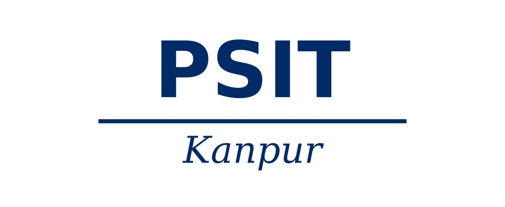
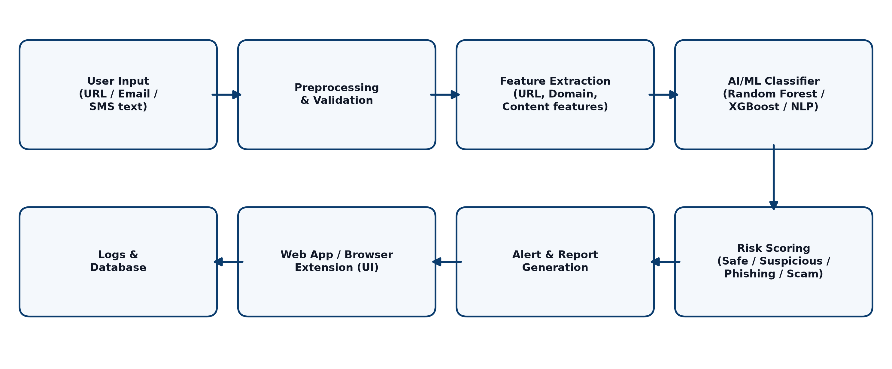

Phishing and online scams are among the most common and damaging cyber threats today. In a phishing attack, an attacker imitates a trusted bank, company or service through a fake website, email or SMS, and tricks the victim into revealing passwords, card numbers, OTPs or other sensitive data. Scams such as fake job offers, lottery messages, fake payment links and impersonation calls follow a similar pattern and cause large financial losses every year, particularly in India where digital payments are growing quickly.
Traditional defences such as blacklists and fixed rule-based filters only block threats that are already known. Attackers register new domains every day and change their messages continuously, so these methods often fail against newly created (“zero-day”) phishing pages. Artificial Intelligence (AI) and Machine Learning (ML) can address this gap by learning the patterns that separate malicious content from genuine content, so that unseen threats can also be recognised.
This project proposes an AI Based Phishing and Scam Detection System that analyses a given URL, email or message text and classifies it as Safe, Suspicious or Phishing/Scam, together with a risk score and a short explanation. The system extracts URL-based features (length, number of dots and special characters, use of IP address, HTTPS status, suspicious keywords), domain-based features (domain age, WHOIS details) and content-based features (urgency words, requests for credentials, mismatched links). A trained classifier then predicts the result in real time through a web application and an optional browser extension.
Special terms: Phishing – fraudulent attempt to steal sensitive information by impersonating a trusted entity; URL – Uniform Resource Locator, the web address of a resource; Feature Extraction – converting raw data into measurable attributes; Classifier – an ML model that assigns an input to a class; NLP – Natural Language Processing, used for analysing message text; Zero-day attack – an attack not yet present in any blacklist.
The main objective of this project is to design and develop an intelligent, easy-to-use system that detects phishing websites and scam messages accurately and in real time, and warns the user before any harm is done. The specific objectives are:
At the end of the project, ordinary users, students and small businesses will have a simple and free tool that helps them identify dangerous links and messages before clicking or replying, which reduces the risk of identity theft and financial fraud.
A feasibility study checks whether the proposed system can be built successfully with the available time, skills and resources. The project was examined from the following points of view.
Technical Feasibility: The project uses open-source, well-documented technologies such as Python, scikit-learn, Flask and JavaScript. Public datasets are available for training, and the model can run on an ordinary laptop. The team has the required knowledge of programming and basic machine learning, so the project is technically feasible.
Operational Feasibility: The system has a simple interface where the user only pastes a URL or message, or uses the browser extension, and gets a clear result. It needs no special training and fits easily into the way people already browse and use email, so it is operationally feasible.
Economic Feasibility: All major tools and libraries are free and open source and the datasets are publicly available. No costly hardware is needed, so the development cost is very low and the project is economically feasible for a student mini project.
Schedule Feasibility: The work is divided into requirement analysis, data collection, model training, application development, testing and documentation. These phases can be completed within the semester time frame.
Legal Feasibility: Only publicly available datasets are used and no private user data is collected without consent. The system is designed for defence and awareness only and follows ethical and IT-law guidelines, so there is no legal obstacle.
The project will follow a step-by-step approach, from data collection to deployment:
The flow of information between the modules is shown in the architecture diagram below.

Hardware required for the development of the project.
Software required for the development of the project.